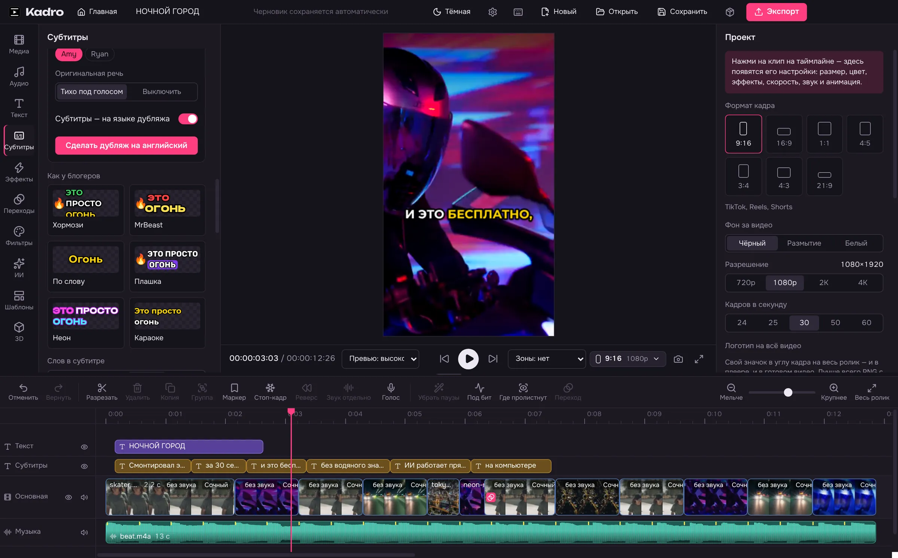

Субтитры как у блогеров.
Kadro сам распознаёт речь — русский, английский и ещё 23 языка — и ставит субтитры по словам. Ключевые слова цветом, эмодзи по смыслу.
- Стили «Хормози», «MrBeast», «Неон», «Караоке»
- Готовые .srt и .vtt тоже подходят
- Перевод субтитров на другой язык
